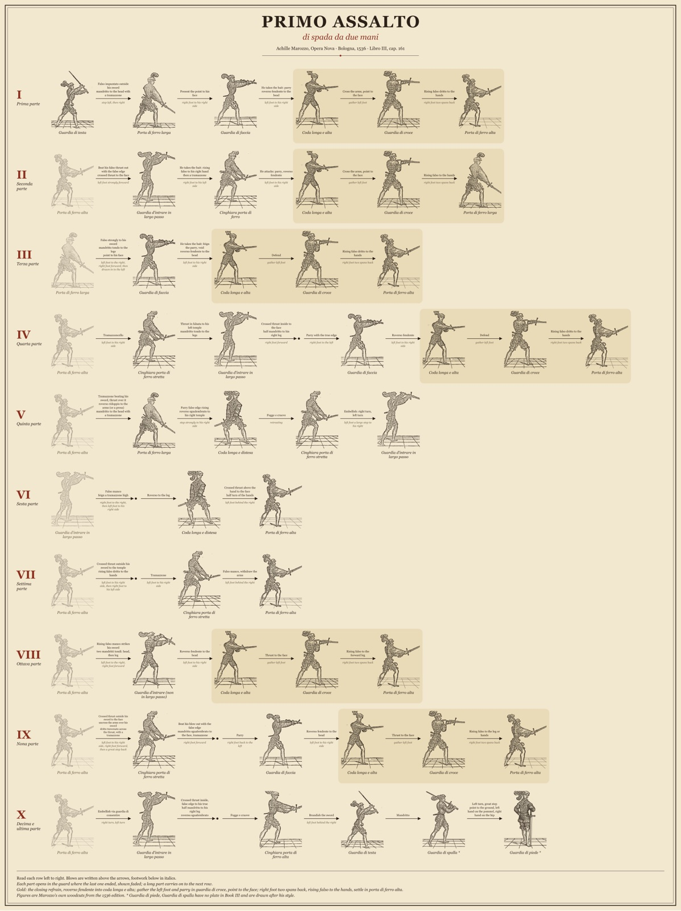
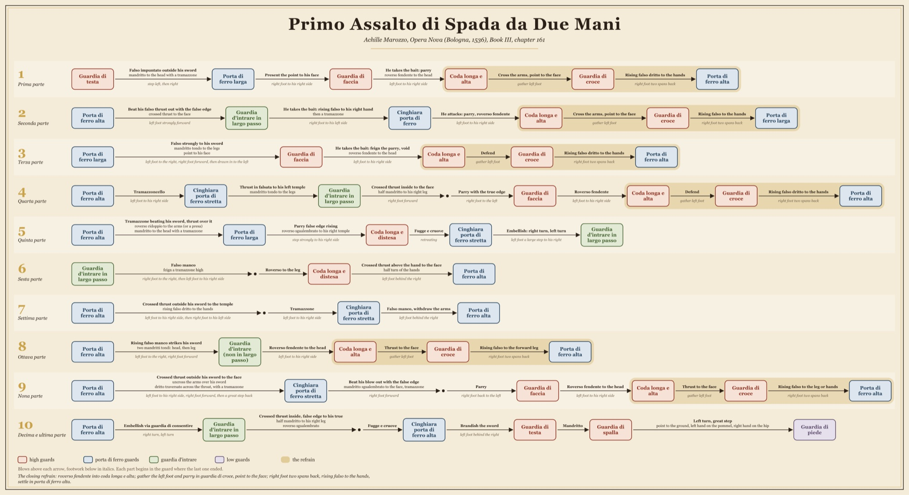
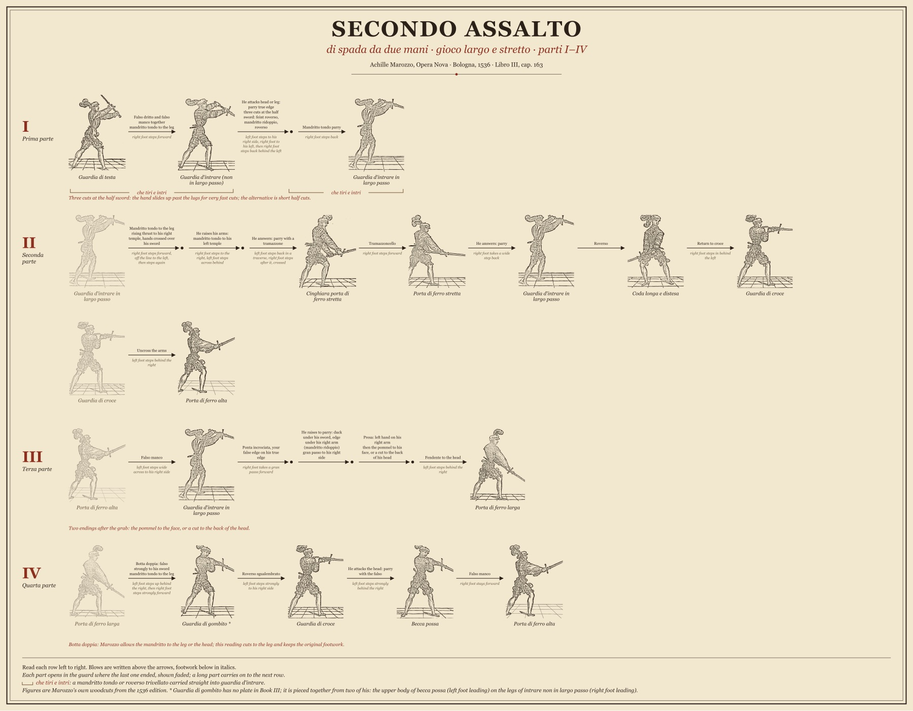
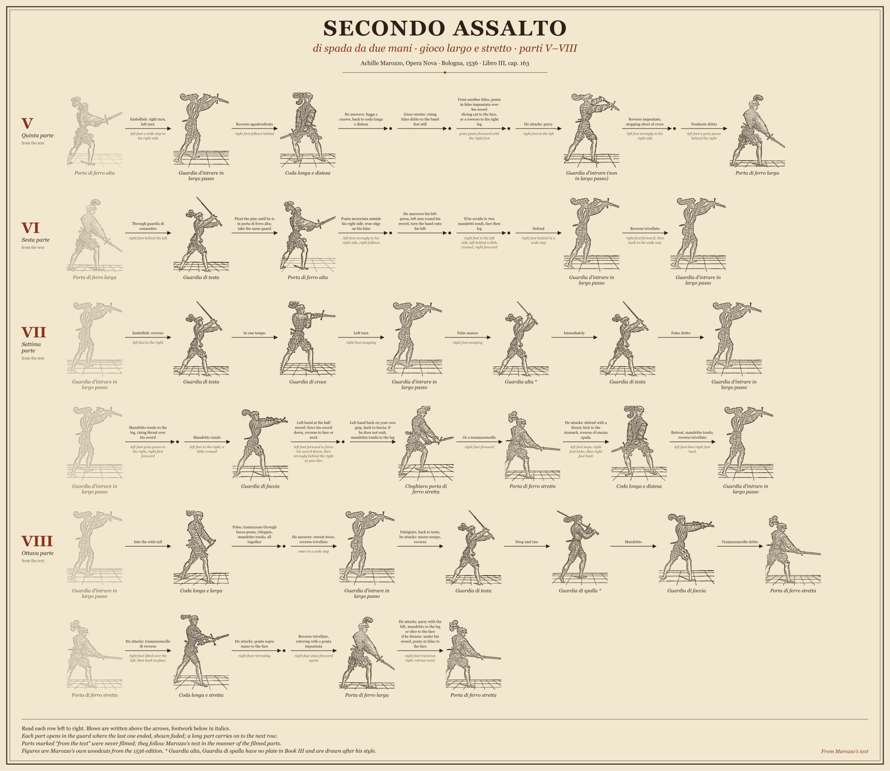
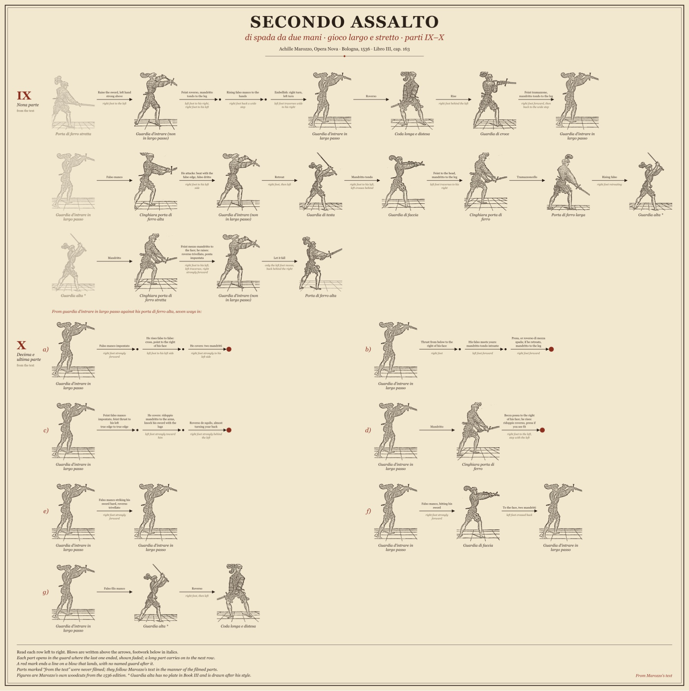
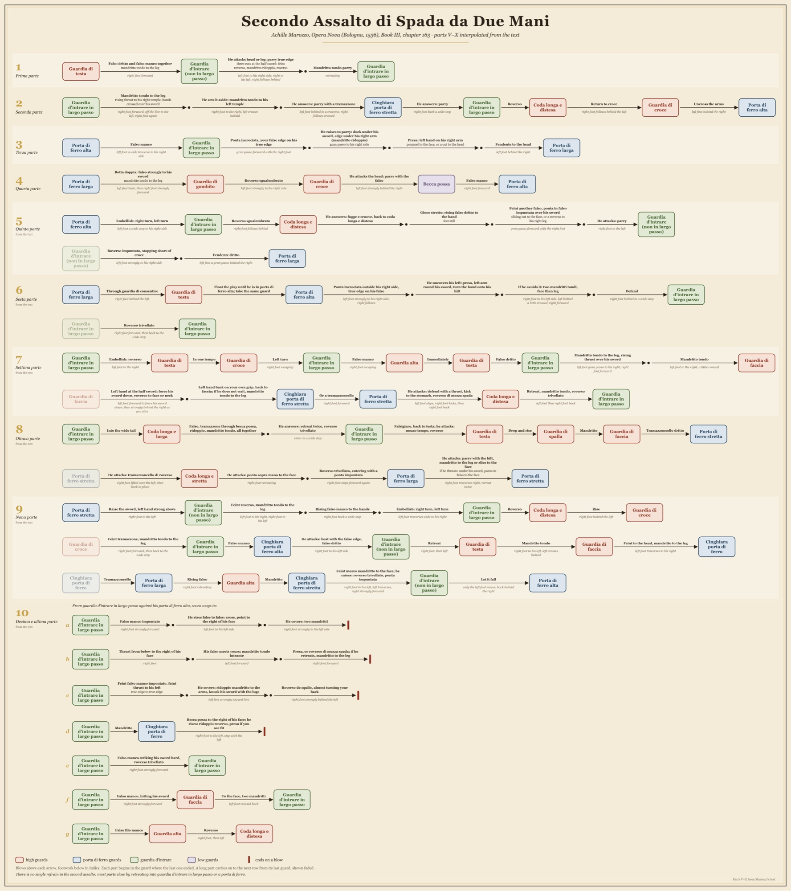

Marozzo, spadone
di spada da due mani · Achille Marozzo, Opera Nova, Bologna 1536, Libro III
Marozzo's assaults of the two-handed sword, following a modern interpretation checked against the 1536 text. Each part begins in the guard where the last one ended. Where the interpretation differs from the text, the posters follow the interpretation.
Primo assalto
cap. 161 · ten parts
Video, all ten parts: Marozzo's woodcuts dissolving from guard to guard, with each blow and its footwork captioned. Download.

Figure poster, one row per part in Marozzo's own woodcuts: PDF for printing (24 × 32 in portrait; fits 24 × 36 in paper with a margin).

Flow diagram, guards as boxes, blows and footwork on the arrows: PDF for printing (about 47 × 26 in landscape). The sequence data is in primo-assalto.json.
Secondo assalto
cap. 163 · ten parts, gioco largo e stretto
Parts I–IV follow the same interpretation; parts V–X are read from the text alone. The second assault is long, so the figure poster comes in three sheets, all 24 in wide so they hang as a set.
Video, all ten parts, with part X's seven ways in one after another: Marozzo's woodcuts dissolving from guard to guard, with each blow and its footwork captioned. Download.

Parts I–IV: PDF for printing (about 24 × 16 in landscape).

Parts V–VIII: PDF for printing (about 24 × 21 in landscape).

Parts IX–X: PDF for printing (about 24 × 24 in).

Flow diagram, all ten parts on one sheet; long parts carry on to a second row, and part X shows its seven ways in as separate rows: PDF for printing (about 47 × 53 in). The sequence data is in secondo-assalto.json.